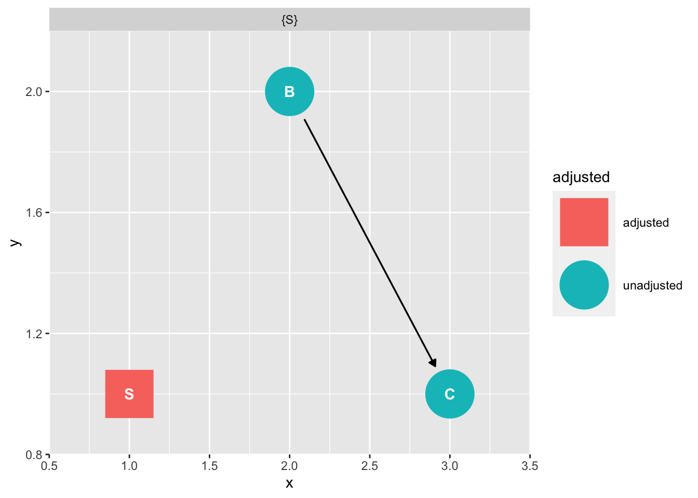

#|label: source
source("https://raw.githubusercontent.com/go-bayes/templates/main/functions/funs.R")load Data
Load Data
#|label: load-data
#|eval: false
######### PART 1: DATA EXCERCISE ##############
# Create a folder called "data", in your Rstudio project. Download this file, add it to your the folder called "data" in your Rstudio project.
# "https://www.dropbox.com/s/vwqijg4ha17hbs1/nzavs_dat_synth_t10_t12?dl=0"
# This will read the synthetic data into Rstudio. Note that the arrow package allows us to have lower memory demands in the storage and retrieval of data.
nzavs_synth <-
arrow::read_parquet(here::here("data", "nzavs_dat_synth_t10_t12"))Inspect
## inspect colnames
colnames(nzavs_synth)
## inspect data properties
str(nzavs_synth)Prepare data
baseline_vars = c(
"edu",
"male",
"eth_cat",
"employed",
"gen_cohort",
"nz_dep2018",
"nzsei13",
"partner",
"parent",
"pol_orient",
"rural_gch2018",
"agreeableness",
"conscientiousness",
"extraversion",
"honesty_humility",
"openness",
"neuroticism",
"modesty",
"religion_identification_level"
)
## Step 2, select the exposure variable. This is the "cause"
exposure_var = c("perfectionism")
## step 3. select the outcome variable. These are the outcomes.
outcome_vars_reflective = c("meaning_purpose",
"meaning_sense")
# optional: select exclusion variables (this will not be necessary most of the time)
exclude_vars = c("year_measured")
# the function "create_wide_data" should be in your environment. If not, make sure to run the first line of code in this script once more. You may ignore the warnings.
prep_reflective <-
create_wide_data(
dat_long = nzavs_synth,
#nzavs_synth,
baseline_vars = baseline_vars,
exposure_var = exposure_var,
outcome_vars = outcome_vars_reflective
)
# check. Note that any column that is the exposure or an outcome is added to "t0_". This ensures the strongest possible confounding control, as described by VanderWeele:
# https://cdn1.sph.harvard.edu/wp-content/uploads/sites/603/2020/09/OutcomeWide_StatisticalScience.pdf
colnames(prep_reflective) [1] "id" "t0_edu"
[3] "t0_male" "t0_eth_cat"
[5] "t0_employed" "t0_gen_cohort"
[7] "t0_nz_dep2018" "t0_nzsei13"
[9] "t0_partner" "t0_parent"
[11] "t0_pol_orient" "t0_rural_gch2018"
[13] "t0_agreeableness" "t0_conscientiousness"
[15] "t0_extraversion" "t0_honesty_humility"
[17] "t0_openness" "t0_neuroticism"
[19] "t0_modesty" "t0_religion_identification_level"
[21] "t0_perfectionism" "t0_meaning_purpose"
[23] "t0_meaning_sense" "t1_perfectionism"
[25] "t2_meaning_purpose" "t2_meaning_sense" # if the data is not working, you much run the code below to make the object in an object of the class dataframe.
# prep_reflective <- as.data.frame(prep_reflective)create composite scores for constructs
library(tidyverse) # should be loaded
dt_ref <- prep_reflective |>
mutate(id = factor(1:nrow(prep_reflective))) |>
mutate(t1_perfectionism = round(t1_perfectionism)) |> # we create a three-level exposure to enable clear causal contrasts. We could also use a continous variable.
mutate(
t1_perfectionism_coarsen = cut(
t1_perfectionism,
breaks = c(1, 4, 5, 7),
include.lowest = TRUE,
include.highest = TRUE,
na.rm = TRUE,
right = FALSE
)
) |>
mutate(
t0_eth_cat = as.factor(t0_eth_cat),
t0_rural_gch2018 = as.factor(t0_rural_gch2018),
t0_gen_cohort = as.factor(t0_gen_cohort)
) |>
group_by(id) |>
dplyr::mutate(t2_meaning = mean(c(t2_meaning_purpose,
t2_meaning_sense),
na.rm = TRUE)) |>
ungroup() |>
# transform numeric variables into z scores (improves estimation)
dplyr::mutate(across(where(is.numeric), ~ scale(.x), .names = "{col}_z")) %>%
# select only factors and numeric values that are z-scores
select(id,
where(is.factor),
t1_perfectionism, # for comparison
ends_with("_z"), ) |>
# tidy data frame so that the columns are ordered by time (useful for more complex models)
relocate(id, .before = starts_with("t1_")) |>
relocate(starts_with("t0_"), .before = starts_with("t1_")) |>
relocate(starts_with("t2_"), .after = starts_with("t1_"))
# inspect
levels(dt_ref$t1_perfectionism_coarsen)[1] "[1,4)" "[4,5)" "[5,7]"# rename levels
dt_ref$t1_perfectionism_coarsen <-
factor(
dt_ref$t1_perfectionism_coarsen,
levels = c("[1,4)", "[4,5)", "[5,7]"),
labels = c("low", "medium", "high"),
ordered = TRUE
)save your dataframe for future use
#|eval: false
# make dataframe
dt_ref = as.data.frame(dt_ref)
# save data
saveRDS(dt_ref, here::here("data", "dt_ref"))
# read -- you may start here if you need to repeat the analysis
dt_ref <- readRDS(here::here("data", "dt_ref"))prepare models
dt_ref <- readRDS(here::here("data", "dt_ref"))
# needs to be data frame
dt_ref = data.frame(dt_ref)
# simplicity
df = dt_ref
# this is the continuous exposure
X = "t1_perfectionism_z"
# this is a categorical exposure
X_pc <- "t1_perfectionism_coarsen"
# set our outcome variable:
Y = "t2_meaning_z" #note that we have created all numeric values into z-scores. This will facilitate estimation and also interpretation. The outcome is expressed in standard deviation units
# Get baseline names
baseline_vars_reflective_cont = dt_ref |>
dplyr::select(starts_with("t0")) |> colnames()
# See what we have created: These are all the "t0_" variables.
# baseline_vars_reflective_cont
# to run these models our data need to be a dataframe (not a tibble or another kind of obect)
# above we've made the data a dataframe, but lets repeat in case you skipped that steip
dt_ref = as.data.frame(dt_ref)
# create our formula string, this time for the categorical variable.
formula_str_X <-
paste(Y,
"~",
X ,
"*",
"(",
paste(baseline_vars_reflective_cont, collapse = "+"),
")")
formula_str_X[1] "t2_meaning_z ~ t1_perfectionism_z * ( t0_male+t0_eth_cat+t0_gen_cohort+t0_rural_gch2018+t0_edu_z+t0_employed_z+t0_nz_dep2018_z+t0_nzsei13_z+t0_partner_z+t0_parent_z+t0_pol_orient_z+t0_agreeableness_z+t0_conscientiousness_z+t0_extraversion_z+t0_honesty_humility_z+t0_openness_z+t0_neuroticism_z+t0_modesty_z+t0_religion_identification_level_z+t0_perfectionism_z+t0_meaning_purpose_z+t0_meaning_sense_z )"## regression based control
# fit model
m1 <- glm(as.formula(formula_str_X),
# shortcut
# weights = weights, # will use weights with propensity score models
family = "gaussian",
data = df)
# we can look at the coefficients of this model, but again, it would be a mistake to interpret them
summary(m1)
Call:
glm(formula = as.formula(formula_str_X), family = "gaussian",
data = df)
Coefficients:
Estimate
(Intercept) -0.0458559
t1_perfectionism_z -0.1347193
t0_maleNot_male 0.0632191
t0_eth_catmāori 0.0341978
t0_eth_catpacific -0.0420690
t0_eth_catasian 0.0224974
t0_gen_cohort.L -0.0203971
t0_gen_cohort.Q 0.0224781
t0_gen_cohort.C -0.0005157
t0_gen_cohort^4 -0.0234273
t0_rural_gch2018medium_urban_accessibility 0.0277126
t0_rural_gch2018low_urban_accessibility 0.0196446
t0_rural_gch2018remote 0.0314218
t0_rural_gch2018very_remote 0.0184033
t0_edu_z 0.0354573
t0_employed_z 0.0104852
t0_nz_dep2018_z 0.0038250
t0_nzsei13_z 0.0186043
t0_partner_z 0.0186944
t0_parent_z 0.0304512
t0_pol_orient_z 0.0268793
t0_agreeableness_z 0.0251108
t0_conscientiousness_z 0.0160022
t0_extraversion_z 0.0443726
t0_honesty_humility_z 0.0189023
t0_openness_z 0.0116959
t0_neuroticism_z -0.0440279
t0_modesty_z 0.0008530
t0_religion_identification_level_z 0.0601431
t0_perfectionism_z 0.0136652
t0_meaning_purpose_z 0.3689498
t0_meaning_sense_z 0.2410291
t1_perfectionism_z:t0_maleNot_male 0.0331692
t1_perfectionism_z:t0_eth_catmāori 0.0094140
t1_perfectionism_z:t0_eth_catpacific -0.0679774
t1_perfectionism_z:t0_eth_catasian -0.0852596
t1_perfectionism_z:t0_gen_cohort.L -0.0211112
t1_perfectionism_z:t0_gen_cohort.Q 0.1133846
t1_perfectionism_z:t0_gen_cohort.C -0.0321318
t1_perfectionism_z:t0_gen_cohort^4 0.0033751
t1_perfectionism_z:t0_rural_gch2018medium_urban_accessibility -0.0007409
t1_perfectionism_z:t0_rural_gch2018low_urban_accessibility -0.0087372
t1_perfectionism_z:t0_rural_gch2018remote -0.0051989
t1_perfectionism_z:t0_rural_gch2018very_remote 0.0406504
t1_perfectionism_z:t0_edu_z 0.0180683
t1_perfectionism_z:t0_employed_z 0.0110596
t1_perfectionism_z:t0_nz_dep2018_z -0.0062207
t1_perfectionism_z:t0_nzsei13_z -0.0011272
t1_perfectionism_z:t0_partner_z 0.0053248
t1_perfectionism_z:t0_parent_z 0.0111114
t1_perfectionism_z:t0_pol_orient_z -0.0003759
t1_perfectionism_z:t0_agreeableness_z -0.0052810
t1_perfectionism_z:t0_conscientiousness_z -0.0003144
t1_perfectionism_z:t0_extraversion_z -0.0041967
t1_perfectionism_z:t0_honesty_humility_z 0.0026688
t1_perfectionism_z:t0_openness_z 0.0086363
t1_perfectionism_z:t0_neuroticism_z -0.0145938
t1_perfectionism_z:t0_modesty_z -0.0026194
t1_perfectionism_z:t0_religion_identification_level_z 0.0086293
t1_perfectionism_z:t0_perfectionism_z 0.0212526
t1_perfectionism_z:t0_meaning_purpose_z 0.0231580
t1_perfectionism_z:t0_meaning_sense_z -0.0017437
Std. Error
(Intercept) 0.0206239
t1_perfectionism_z 0.0217018
t0_maleNot_male 0.0158872
t0_eth_catmāori 0.0257156
t0_eth_catpacific 0.0513832
t0_eth_catasian 0.0401502
t0_gen_cohort.L 0.0537594
t0_gen_cohort.Q 0.0452441
t0_gen_cohort.C 0.0287586
t0_gen_cohort^4 0.0160948
t0_rural_gch2018medium_urban_accessibility 0.0185188
t0_rural_gch2018low_urban_accessibility 0.0226516
t0_rural_gch2018remote 0.0338997
t0_rural_gch2018very_remote 0.0697321
t0_edu_z 0.0085782
t0_employed_z 0.0073289
t0_nz_dep2018_z 0.0072973
t0_nzsei13_z 0.0083108
t0_partner_z 0.0075420
t0_parent_z 0.0082115
t0_pol_orient_z 0.0079719
t0_agreeableness_z 0.0079531
t0_conscientiousness_z 0.0075374
t0_extraversion_z 0.0075663
t0_honesty_humility_z 0.0080126
t0_openness_z 0.0076666
t0_neuroticism_z 0.0084511
t0_modesty_z 0.0079318
t0_religion_identification_level_z 0.0075053
t0_perfectionism_z 0.0106384
t0_meaning_purpose_z 0.0097171
t0_meaning_sense_z 0.0098484
t1_perfectionism_z:t0_maleNot_male 0.0159842
t1_perfectionism_z:t0_eth_catmāori 0.0248536
t1_perfectionism_z:t0_eth_catpacific 0.0513900
t1_perfectionism_z:t0_eth_catasian 0.0395309
t1_perfectionism_z:t0_gen_cohort.L 0.0531681
t1_perfectionism_z:t0_gen_cohort.Q 0.0443921
t1_perfectionism_z:t0_gen_cohort.C 0.0280822
t1_perfectionism_z:t0_gen_cohort^4 0.0158307
t1_perfectionism_z:t0_rural_gch2018medium_urban_accessibility 0.0181669
t1_perfectionism_z:t0_rural_gch2018low_urban_accessibility 0.0231386
t1_perfectionism_z:t0_rural_gch2018remote 0.0363971
t1_perfectionism_z:t0_rural_gch2018very_remote 0.0788117
t1_perfectionism_z:t0_edu_z 0.0086251
t1_perfectionism_z:t0_employed_z 0.0070229
t1_perfectionism_z:t0_nz_dep2018_z 0.0072208
t1_perfectionism_z:t0_nzsei13_z 0.0082785
t1_perfectionism_z:t0_partner_z 0.0072999
t1_perfectionism_z:t0_parent_z 0.0082109
t1_perfectionism_z:t0_pol_orient_z 0.0078204
t1_perfectionism_z:t0_agreeableness_z 0.0075244
t1_perfectionism_z:t0_conscientiousness_z 0.0071301
t1_perfectionism_z:t0_extraversion_z 0.0073804
t1_perfectionism_z:t0_honesty_humility_z 0.0078333
t1_perfectionism_z:t0_openness_z 0.0074053
t1_perfectionism_z:t0_neuroticism_z 0.0082842
t1_perfectionism_z:t0_modesty_z 0.0079651
t1_perfectionism_z:t0_religion_identification_level_z 0.0074253
t1_perfectionism_z:t0_perfectionism_z 0.0081526
t1_perfectionism_z:t0_meaning_purpose_z 0.0090046
t1_perfectionism_z:t0_meaning_sense_z 0.0086903
t value Pr(>|t|)
(Intercept) -2.223 0.02621
t1_perfectionism_z -6.208 5.59e-10
t0_maleNot_male 3.979 6.96e-05
t0_eth_catmāori 1.330 0.18360
t0_eth_catpacific -0.819 0.41296
t0_eth_catasian 0.560 0.57527
t0_gen_cohort.L -0.379 0.70439
t0_gen_cohort.Q 0.497 0.61933
t0_gen_cohort.C -0.018 0.98569
t0_gen_cohort^4 -1.456 0.14554
t0_rural_gch2018medium_urban_accessibility 1.496 0.13457
t0_rural_gch2018low_urban_accessibility 0.867 0.38583
t0_rural_gch2018remote 0.927 0.35400
t0_rural_gch2018very_remote 0.264 0.79185
t0_edu_z 4.133 3.60e-05
t0_employed_z 1.431 0.15256
t0_nz_dep2018_z 0.524 0.60018
t0_nzsei13_z 2.239 0.02521
t0_partner_z 2.479 0.01320
t0_parent_z 3.708 0.00021
t0_pol_orient_z 3.372 0.00075
t0_agreeableness_z 3.157 0.00160
t0_conscientiousness_z 2.123 0.03378
t0_extraversion_z 5.865 4.65e-09
t0_honesty_humility_z 2.359 0.01834
t0_openness_z 1.526 0.12715
t0_neuroticism_z -5.210 1.93e-07
t0_modesty_z 0.108 0.91436
t0_religion_identification_level_z 8.013 1.24e-15
t0_perfectionism_z 1.285 0.19899
t0_meaning_purpose_z 37.969 < 2e-16
t0_meaning_sense_z 24.474 < 2e-16
t1_perfectionism_z:t0_maleNot_male 2.075 0.03800
t1_perfectionism_z:t0_eth_catmāori 0.379 0.70486
t1_perfectionism_z:t0_eth_catpacific -1.323 0.18594
t1_perfectionism_z:t0_eth_catasian -2.157 0.03105
t1_perfectionism_z:t0_gen_cohort.L -0.397 0.69133
t1_perfectionism_z:t0_gen_cohort.Q 2.554 0.01066
t1_perfectionism_z:t0_gen_cohort.C -1.144 0.25257
t1_perfectionism_z:t0_gen_cohort^4 0.213 0.83117
t1_perfectionism_z:t0_rural_gch2018medium_urban_accessibility -0.041 0.96747
t1_perfectionism_z:t0_rural_gch2018low_urban_accessibility -0.378 0.70573
t1_perfectionism_z:t0_rural_gch2018remote -0.143 0.88642
t1_perfectionism_z:t0_rural_gch2018very_remote 0.516 0.60601
t1_perfectionism_z:t0_edu_z 2.095 0.03621
t1_perfectionism_z:t0_employed_z 1.575 0.11533
t1_perfectionism_z:t0_nz_dep2018_z -0.861 0.38899
t1_perfectionism_z:t0_nzsei13_z -0.136 0.89169
t1_perfectionism_z:t0_partner_z 0.729 0.46575
t1_perfectionism_z:t0_parent_z 1.353 0.17601
t1_perfectionism_z:t0_pol_orient_z -0.048 0.96167
t1_perfectionism_z:t0_agreeableness_z -0.702 0.48279
t1_perfectionism_z:t0_conscientiousness_z -0.044 0.96482
t1_perfectionism_z:t0_extraversion_z -0.569 0.56963
t1_perfectionism_z:t0_honesty_humility_z 0.341 0.73334
t1_perfectionism_z:t0_openness_z 1.166 0.24355
t1_perfectionism_z:t0_neuroticism_z -1.762 0.07816
t1_perfectionism_z:t0_modesty_z -0.329 0.74226
t1_perfectionism_z:t0_religion_identification_level_z 1.162 0.24520
t1_perfectionism_z:t0_perfectionism_z 2.607 0.00915
t1_perfectionism_z:t0_meaning_purpose_z 2.572 0.01013
t1_perfectionism_z:t0_meaning_sense_z -0.201 0.84098
(Intercept) *
t1_perfectionism_z ***
t0_maleNot_male ***
t0_eth_catmāori
t0_eth_catpacific
t0_eth_catasian
t0_gen_cohort.L
t0_gen_cohort.Q
t0_gen_cohort.C
t0_gen_cohort^4
t0_rural_gch2018medium_urban_accessibility
t0_rural_gch2018low_urban_accessibility
t0_rural_gch2018remote
t0_rural_gch2018very_remote
t0_edu_z ***
t0_employed_z
t0_nz_dep2018_z
t0_nzsei13_z *
t0_partner_z *
t0_parent_z ***
t0_pol_orient_z ***
t0_agreeableness_z **
t0_conscientiousness_z *
t0_extraversion_z ***
t0_honesty_humility_z *
t0_openness_z
t0_neuroticism_z ***
t0_modesty_z
t0_religion_identification_level_z ***
t0_perfectionism_z
t0_meaning_purpose_z ***
t0_meaning_sense_z ***
t1_perfectionism_z:t0_maleNot_male *
t1_perfectionism_z:t0_eth_catmāori
t1_perfectionism_z:t0_eth_catpacific
t1_perfectionism_z:t0_eth_catasian *
t1_perfectionism_z:t0_gen_cohort.L
t1_perfectionism_z:t0_gen_cohort.Q *
t1_perfectionism_z:t0_gen_cohort.C
t1_perfectionism_z:t0_gen_cohort^4
t1_perfectionism_z:t0_rural_gch2018medium_urban_accessibility
t1_perfectionism_z:t0_rural_gch2018low_urban_accessibility
t1_perfectionism_z:t0_rural_gch2018remote
t1_perfectionism_z:t0_rural_gch2018very_remote
t1_perfectionism_z:t0_edu_z *
t1_perfectionism_z:t0_employed_z
t1_perfectionism_z:t0_nz_dep2018_z
t1_perfectionism_z:t0_nzsei13_z
t1_perfectionism_z:t0_partner_z
t1_perfectionism_z:t0_parent_z
t1_perfectionism_z:t0_pol_orient_z
t1_perfectionism_z:t0_agreeableness_z
t1_perfectionism_z:t0_conscientiousness_z
t1_perfectionism_z:t0_extraversion_z
t1_perfectionism_z:t0_honesty_humility_z
t1_perfectionism_z:t0_openness_z
t1_perfectionism_z:t0_neuroticism_z .
t1_perfectionism_z:t0_modesty_z
t1_perfectionism_z:t0_religion_identification_level_z
t1_perfectionism_z:t0_perfectionism_z **
t1_perfectionism_z:t0_meaning_purpose_z *
t1_perfectionism_z:t0_meaning_sense_z
---
Signif. codes: 0 '***' 0.001 '**' 0.01 '*' 0.05 '.' 0.1 ' ' 1
(Dispersion parameter for gaussian family taken to be 0.479121)
Null deviance: 9999.0 on 9999 degrees of freedom
Residual deviance: 4761.5 on 9938 degrees of freedom
AIC: 21085
Number of Fisher Scoring iterations: 2simulate coefficients for the continuous exposure
library(clarify)
nsims = 200
sim_model_r <- sim(m1, n = nsims)
# set to number of cores on your machine, e.g.
cores = 2
# simulate effect as modified
sim_estimand_r <- sim_ame(sim_model_r,
var = X,
cl = cores,
verbose = FALSE)
# this is the difference in expectations between everyone in the population being subject to a one standard deviation increase in perfectionism
# and everyone being subject to an average level of perfectionism.
# Estimate 2.5 % 97.5 %
# dY/d(t1_perfectionism_z) -0.160 -0.178 -0.140
summary(sim_estimand_r) Estimate 2.5 % 97.5 %
E[dY/d(t1_perfectionism_z)] -0.160 -0.179 -0.142Coarsened variable.
# create our formula string:
formula_str_X_pc <-
paste(Y,
"~",
X_pc ,
"*",
"(",
paste(baseline_vars_reflective_cont, collapse = "+"),
")")
formula_str_X_pc[1] "t2_meaning_z ~ t1_perfectionism_coarsen * ( t0_male+t0_eth_cat+t0_gen_cohort+t0_rural_gch2018+t0_edu_z+t0_employed_z+t0_nz_dep2018_z+t0_nzsei13_z+t0_partner_z+t0_parent_z+t0_pol_orient_z+t0_agreeableness_z+t0_conscientiousness_z+t0_extraversion_z+t0_honesty_humility_z+t0_openness_z+t0_neuroticism_z+t0_modesty_z+t0_religion_identification_level_z+t0_perfectionism_z+t0_meaning_purpose_z+t0_meaning_sense_z )"# fit model
m2 <- glm(as.formula(formula_str_X_pc),
# shortcut
# weights = weights, # will use weights with propensity score models
family = "gaussian",
data = df)
# we can look at the coefficients of this model, but again it would be a mistake to interpret them
summary(m2)
Call:
glm(formula = as.formula(formula_str_X_pc), family = "gaussian",
data = df)
Coefficients:
Estimate
(Intercept) -0.1226132
t1_perfectionism_coarsen.L -0.1470404
t1_perfectionism_coarsen.Q 0.0968493
t0_maleNot_male 0.0953799
t0_eth_catmāori 0.0330656
t0_eth_catpacific -0.0797194
t0_eth_catasian -0.0450017
t0_gen_cohort.L -0.0638088
t0_gen_cohort.Q 0.0783060
t0_gen_cohort.C -0.0171482
t0_gen_cohort^4 -0.0209400
t0_rural_gch2018medium_urban_accessibility 0.0356611
t0_rural_gch2018low_urban_accessibility 0.0112271
t0_rural_gch2018remote 0.0206451
t0_rural_gch2018very_remote 0.0708426
t0_edu_z 0.0436332
t0_employed_z 0.0170529
t0_nz_dep2018_z -0.0018689
t0_nzsei13_z 0.0204286
t0_partner_z 0.0165503
t0_parent_z 0.0377576
t0_pol_orient_z 0.0228034
t0_agreeableness_z 0.0180559
t0_conscientiousness_z 0.0192677
t0_extraversion_z 0.0450764
t0_honesty_humility_z 0.0222787
t0_openness_z 0.0159350
t0_neuroticism_z -0.0602859
t0_modesty_z -0.0035097
t0_religion_identification_level_z 0.0604881
t0_perfectionism_z 0.0008418
t0_meaning_purpose_z 0.3868685
t0_meaning_sense_z 0.2434801
t1_perfectionism_coarsen.L:t0_maleNot_male 0.0620947
t1_perfectionism_coarsen.Q:t0_maleNot_male -0.0431561
t1_perfectionism_coarsen.L:t0_eth_catmāori 0.0669463
t1_perfectionism_coarsen.Q:t0_eth_catmāori 0.1235800
t1_perfectionism_coarsen.L:t0_eth_catpacific -0.0718211
t1_perfectionism_coarsen.Q:t0_eth_catpacific 0.0856952
t1_perfectionism_coarsen.L:t0_eth_catasian -0.1551102
t1_perfectionism_coarsen.Q:t0_eth_catasian 0.0883442
t1_perfectionism_coarsen.L:t0_gen_cohort.L -0.0306497
t1_perfectionism_coarsen.Q:t0_gen_cohort.L 0.1516702
t1_perfectionism_coarsen.L:t0_gen_cohort.Q 0.1958547
t1_perfectionism_coarsen.Q:t0_gen_cohort.Q 0.0454657
t1_perfectionism_coarsen.L:t0_gen_cohort.C -0.0322455
t1_perfectionism_coarsen.Q:t0_gen_cohort.C 0.0440922
t1_perfectionism_coarsen.L:t0_gen_cohort^4 0.0173854
t1_perfectionism_coarsen.Q:t0_gen_cohort^4 0.0131898
t1_perfectionism_coarsen.L:t0_rural_gch2018medium_urban_accessibility 0.0090066
t1_perfectionism_coarsen.Q:t0_rural_gch2018medium_urban_accessibility 0.0005206
t1_perfectionism_coarsen.L:t0_rural_gch2018low_urban_accessibility -0.0464747
t1_perfectionism_coarsen.Q:t0_rural_gch2018low_urban_accessibility -0.0419324
t1_perfectionism_coarsen.L:t0_rural_gch2018remote -0.0830230
t1_perfectionism_coarsen.Q:t0_rural_gch2018remote -0.1385026
t1_perfectionism_coarsen.L:t0_rural_gch2018very_remote 0.0971420
t1_perfectionism_coarsen.Q:t0_rural_gch2018very_remote -0.0499774
t1_perfectionism_coarsen.L:t0_edu_z 0.0286493
t1_perfectionism_coarsen.Q:t0_edu_z -0.0028539
t1_perfectionism_coarsen.L:t0_employed_z 0.0252432
t1_perfectionism_coarsen.Q:t0_employed_z 0.0091128
t1_perfectionism_coarsen.L:t0_nz_dep2018_z -0.0093324
t1_perfectionism_coarsen.Q:t0_nz_dep2018_z 0.0005713
t1_perfectionism_coarsen.L:t0_nzsei13_z 0.0009809
t1_perfectionism_coarsen.Q:t0_nzsei13_z 0.0032192
t1_perfectionism_coarsen.L:t0_partner_z 0.0012847
t1_perfectionism_coarsen.Q:t0_partner_z 0.0115548
t1_perfectionism_coarsen.L:t0_parent_z 0.0270801
t1_perfectionism_coarsen.Q:t0_parent_z 0.0090702
t1_perfectionism_coarsen.L:t0_pol_orient_z -0.0006814
t1_perfectionism_coarsen.Q:t0_pol_orient_z 0.0172947
t1_perfectionism_coarsen.L:t0_agreeableness_z -0.0189019
t1_perfectionism_coarsen.Q:t0_agreeableness_z 0.0024354
t1_perfectionism_coarsen.L:t0_conscientiousness_z -0.0126309
t1_perfectionism_coarsen.Q:t0_conscientiousness_z -0.0194902
t1_perfectionism_coarsen.L:t0_extraversion_z -0.0002204
t1_perfectionism_coarsen.Q:t0_extraversion_z 0.0165607
t1_perfectionism_coarsen.L:t0_honesty_humility_z -0.0027931
t1_perfectionism_coarsen.Q:t0_honesty_humility_z -0.0140992
t1_perfectionism_coarsen.L:t0_openness_z 0.0065241
t1_perfectionism_coarsen.Q:t0_openness_z -0.0126349
t1_perfectionism_coarsen.L:t0_neuroticism_z -0.0234255
t1_perfectionism_coarsen.Q:t0_neuroticism_z 0.0062206
t1_perfectionism_coarsen.L:t0_modesty_z -0.0108579
t1_perfectionism_coarsen.Q:t0_modesty_z 0.0147372
t1_perfectionism_coarsen.L:t0_religion_identification_level_z 0.0227283
t1_perfectionism_coarsen.Q:t0_religion_identification_level_z 0.0279009
t1_perfectionism_coarsen.L:t0_perfectionism_z 0.0320759
t1_perfectionism_coarsen.Q:t0_perfectionism_z -0.0455083
t1_perfectionism_coarsen.L:t0_meaning_purpose_z 0.0411158
t1_perfectionism_coarsen.Q:t0_meaning_purpose_z 0.0056432
t1_perfectionism_coarsen.L:t0_meaning_sense_z -0.0091829
t1_perfectionism_coarsen.Q:t0_meaning_sense_z -0.0111806
Std. Error
(Intercept) 0.0254701
t1_perfectionism_coarsen.L 0.0431872
t1_perfectionism_coarsen.Q 0.0450248
t0_maleNot_male 0.0192675
t0_eth_catmāori 0.0299149
t0_eth_catpacific 0.0608525
t0_eth_catasian 0.0426782
t0_gen_cohort.L 0.0603945
t0_gen_cohort.Q 0.0506044
t0_gen_cohort.C 0.0321417
t0_gen_cohort^4 0.0184486
t0_rural_gch2018medium_urban_accessibility 0.0227806
t0_rural_gch2018low_urban_accessibility 0.0280264
t0_rural_gch2018remote 0.0427166
t0_rural_gch2018very_remote 0.0932044
t0_edu_z 0.0105185
t0_employed_z 0.0086131
t0_nz_dep2018_z 0.0086805
t0_nzsei13_z 0.0100606
t0_partner_z 0.0085931
t0_parent_z 0.0097982
t0_pol_orient_z 0.0097893
t0_agreeableness_z 0.0092234
t0_conscientiousness_z 0.0085661
t0_extraversion_z 0.0091048
t0_honesty_humility_z 0.0096794
t0_openness_z 0.0092394
t0_neuroticism_z 0.0099422
t0_modesty_z 0.0094387
t0_religion_identification_level_z 0.0092116
t0_perfectionism_z 0.0113879
t0_meaning_purpose_z 0.0105537
t0_meaning_sense_z 0.0099679
t1_perfectionism_coarsen.L:t0_maleNot_male 0.0314355
t1_perfectionism_coarsen.Q:t0_maleNot_male 0.0352027
t1_perfectionism_coarsen.L:t0_eth_catmāori 0.0484912
t1_perfectionism_coarsen.Q:t0_eth_catmāori 0.0549365
t1_perfectionism_coarsen.L:t0_eth_catpacific 0.1061646
t1_perfectionism_coarsen.Q:t0_eth_catpacific 0.1046290
t1_perfectionism_coarsen.L:t0_eth_catasian 0.0698406
t1_perfectionism_coarsen.Q:t0_eth_catasian 0.0777872
t1_perfectionism_coarsen.L:t0_gen_cohort.L 0.1029227
t1_perfectionism_coarsen.Q:t0_gen_cohort.L 0.1062634
t1_perfectionism_coarsen.L:t0_gen_cohort.Q 0.0861450
t1_perfectionism_coarsen.Q:t0_gen_cohort.Q 0.0891283
t1_perfectionism_coarsen.L:t0_gen_cohort.C 0.0545987
t1_perfectionism_coarsen.Q:t0_gen_cohort.C 0.0567232
t1_perfectionism_coarsen.L:t0_gen_cohort^4 0.0306661
t1_perfectionism_coarsen.Q:t0_gen_cohort^4 0.0331920
t1_perfectionism_coarsen.L:t0_rural_gch2018medium_urban_accessibility 0.0367803
t1_perfectionism_coarsen.Q:t0_rural_gch2018medium_urban_accessibility 0.0419635
t1_perfectionism_coarsen.L:t0_rural_gch2018low_urban_accessibility 0.0461386
t1_perfectionism_coarsen.Q:t0_rural_gch2018low_urban_accessibility 0.0508341
t1_perfectionism_coarsen.L:t0_rural_gch2018remote 0.0743191
t1_perfectionism_coarsen.Q:t0_rural_gch2018remote 0.0736540
t1_perfectionism_coarsen.L:t0_rural_gch2018very_remote 0.1618903
t1_perfectionism_coarsen.Q:t0_rural_gch2018very_remote 0.1609781
t1_perfectionism_coarsen.L:t0_edu_z 0.0169322
t1_perfectionism_coarsen.Q:t0_edu_z 0.0194200
t1_perfectionism_coarsen.L:t0_employed_z 0.0140222
t1_perfectionism_coarsen.Q:t0_employed_z 0.0157635
t1_perfectionism_coarsen.L:t0_nz_dep2018_z 0.0140633
t1_perfectionism_coarsen.Q:t0_nz_dep2018_z 0.0159476
t1_perfectionism_coarsen.L:t0_nzsei13_z 0.0163164
t1_perfectionism_coarsen.Q:t0_nzsei13_z 0.0184681
t1_perfectionism_coarsen.L:t0_partner_z 0.0140428
t1_perfectionism_coarsen.Q:t0_partner_z 0.0156797
t1_perfectionism_coarsen.L:t0_parent_z 0.0160940
t1_perfectionism_coarsen.Q:t0_parent_z 0.0178048
t1_perfectionism_coarsen.L:t0_pol_orient_z 0.0158645
t1_perfectionism_coarsen.Q:t0_pol_orient_z 0.0179807
t1_perfectionism_coarsen.L:t0_agreeableness_z 0.0144998
t1_perfectionism_coarsen.Q:t0_agreeableness_z 0.0173259
t1_perfectionism_coarsen.L:t0_conscientiousness_z 0.0135816
t1_perfectionism_coarsen.Q:t0_conscientiousness_z 0.0159942
t1_perfectionism_coarsen.L:t0_extraversion_z 0.0146683
t1_perfectionism_coarsen.Q:t0_extraversion_z 0.0167994
t1_perfectionism_coarsen.L:t0_honesty_humility_z 0.0155358
t1_perfectionism_coarsen.Q:t0_honesty_humility_z 0.0179105
t1_perfectionism_coarsen.L:t0_openness_z 0.0147235
t1_perfectionism_coarsen.Q:t0_openness_z 0.0171878
t1_perfectionism_coarsen.L:t0_neuroticism_z 0.0160470
t1_perfectionism_coarsen.Q:t0_neuroticism_z 0.0183189
t1_perfectionism_coarsen.L:t0_modesty_z 0.0153804
t1_perfectionism_coarsen.Q:t0_modesty_z 0.0172620
t1_perfectionism_coarsen.L:t0_religion_identification_level_z 0.0149222
t1_perfectionism_coarsen.Q:t0_religion_identification_level_z 0.0169249
t1_perfectionism_coarsen.L:t0_perfectionism_z 0.0178542
t1_perfectionism_coarsen.Q:t0_perfectionism_z 0.0214321
t1_perfectionism_coarsen.L:t0_meaning_purpose_z 0.0171386
t1_perfectionism_coarsen.Q:t0_meaning_purpose_z 0.0193535
t1_perfectionism_coarsen.L:t0_meaning_sense_z 0.0158506
t1_perfectionism_coarsen.Q:t0_meaning_sense_z 0.0185719
t value
(Intercept) -4.814
t1_perfectionism_coarsen.L -3.405
t1_perfectionism_coarsen.Q 2.151
t0_maleNot_male 4.950
t0_eth_catmāori 1.105
t0_eth_catpacific -1.310
t0_eth_catasian -1.054
t0_gen_cohort.L -1.057
t0_gen_cohort.Q 1.547
t0_gen_cohort.C -0.534
t0_gen_cohort^4 -1.135
t0_rural_gch2018medium_urban_accessibility 1.565
t0_rural_gch2018low_urban_accessibility 0.401
t0_rural_gch2018remote 0.483
t0_rural_gch2018very_remote 0.760
t0_edu_z 4.148
t0_employed_z 1.980
t0_nz_dep2018_z -0.215
t0_nzsei13_z 2.031
t0_partner_z 1.926
t0_parent_z 3.854
t0_pol_orient_z 2.329
t0_agreeableness_z 1.958
t0_conscientiousness_z 2.249
t0_extraversion_z 4.951
t0_honesty_humility_z 2.302
t0_openness_z 1.725
t0_neuroticism_z -6.064
t0_modesty_z -0.372
t0_religion_identification_level_z 6.566
t0_perfectionism_z 0.074
t0_meaning_purpose_z 36.657
t0_meaning_sense_z 24.426
t1_perfectionism_coarsen.L:t0_maleNot_male 1.975
t1_perfectionism_coarsen.Q:t0_maleNot_male -1.226
t1_perfectionism_coarsen.L:t0_eth_catmāori 1.381
t1_perfectionism_coarsen.Q:t0_eth_catmāori 2.250
t1_perfectionism_coarsen.L:t0_eth_catpacific -0.677
t1_perfectionism_coarsen.Q:t0_eth_catpacific 0.819
t1_perfectionism_coarsen.L:t0_eth_catasian -2.221
t1_perfectionism_coarsen.Q:t0_eth_catasian 1.136
t1_perfectionism_coarsen.L:t0_gen_cohort.L -0.298
t1_perfectionism_coarsen.Q:t0_gen_cohort.L 1.427
t1_perfectionism_coarsen.L:t0_gen_cohort.Q 2.274
t1_perfectionism_coarsen.Q:t0_gen_cohort.Q 0.510
t1_perfectionism_coarsen.L:t0_gen_cohort.C -0.591
t1_perfectionism_coarsen.Q:t0_gen_cohort.C 0.777
t1_perfectionism_coarsen.L:t0_gen_cohort^4 0.567
t1_perfectionism_coarsen.Q:t0_gen_cohort^4 0.397
t1_perfectionism_coarsen.L:t0_rural_gch2018medium_urban_accessibility 0.245
t1_perfectionism_coarsen.Q:t0_rural_gch2018medium_urban_accessibility 0.012
t1_perfectionism_coarsen.L:t0_rural_gch2018low_urban_accessibility -1.007
t1_perfectionism_coarsen.Q:t0_rural_gch2018low_urban_accessibility -0.825
t1_perfectionism_coarsen.L:t0_rural_gch2018remote -1.117
t1_perfectionism_coarsen.Q:t0_rural_gch2018remote -1.880
t1_perfectionism_coarsen.L:t0_rural_gch2018very_remote 0.600
t1_perfectionism_coarsen.Q:t0_rural_gch2018very_remote -0.310
t1_perfectionism_coarsen.L:t0_edu_z 1.692
t1_perfectionism_coarsen.Q:t0_edu_z -0.147
t1_perfectionism_coarsen.L:t0_employed_z 1.800
t1_perfectionism_coarsen.Q:t0_employed_z 0.578
t1_perfectionism_coarsen.L:t0_nz_dep2018_z -0.664
t1_perfectionism_coarsen.Q:t0_nz_dep2018_z 0.036
t1_perfectionism_coarsen.L:t0_nzsei13_z 0.060
t1_perfectionism_coarsen.Q:t0_nzsei13_z 0.174
t1_perfectionism_coarsen.L:t0_partner_z 0.091
t1_perfectionism_coarsen.Q:t0_partner_z 0.737
t1_perfectionism_coarsen.L:t0_parent_z 1.683
t1_perfectionism_coarsen.Q:t0_parent_z 0.509
t1_perfectionism_coarsen.L:t0_pol_orient_z -0.043
t1_perfectionism_coarsen.Q:t0_pol_orient_z 0.962
t1_perfectionism_coarsen.L:t0_agreeableness_z -1.304
t1_perfectionism_coarsen.Q:t0_agreeableness_z 0.141
t1_perfectionism_coarsen.L:t0_conscientiousness_z -0.930
t1_perfectionism_coarsen.Q:t0_conscientiousness_z -1.219
t1_perfectionism_coarsen.L:t0_extraversion_z -0.015
t1_perfectionism_coarsen.Q:t0_extraversion_z 0.986
t1_perfectionism_coarsen.L:t0_honesty_humility_z -0.180
t1_perfectionism_coarsen.Q:t0_honesty_humility_z -0.787
t1_perfectionism_coarsen.L:t0_openness_z 0.443
t1_perfectionism_coarsen.Q:t0_openness_z -0.735
t1_perfectionism_coarsen.L:t0_neuroticism_z -1.460
t1_perfectionism_coarsen.Q:t0_neuroticism_z 0.340
t1_perfectionism_coarsen.L:t0_modesty_z -0.706
t1_perfectionism_coarsen.Q:t0_modesty_z 0.854
t1_perfectionism_coarsen.L:t0_religion_identification_level_z 1.523
t1_perfectionism_coarsen.Q:t0_religion_identification_level_z 1.649
t1_perfectionism_coarsen.L:t0_perfectionism_z 1.797
t1_perfectionism_coarsen.Q:t0_perfectionism_z -2.123
t1_perfectionism_coarsen.L:t0_meaning_purpose_z 2.399
t1_perfectionism_coarsen.Q:t0_meaning_purpose_z 0.292
t1_perfectionism_coarsen.L:t0_meaning_sense_z -0.579
t1_perfectionism_coarsen.Q:t0_meaning_sense_z -0.602
Pr(>|t|)
(Intercept) 1.50e-06
t1_perfectionism_coarsen.L 0.000665
t1_perfectionism_coarsen.Q 0.031498
t0_maleNot_male 7.53e-07
t0_eth_catmāori 0.269047
t0_eth_catpacific 0.190212
t0_eth_catasian 0.291706
t0_gen_cohort.L 0.290751
t0_gen_cohort.Q 0.121795
t0_gen_cohort.C 0.593687
t0_gen_cohort^4 0.256384
t0_rural_gch2018medium_urban_accessibility 0.117517
t0_rural_gch2018low_urban_accessibility 0.688730
t0_rural_gch2018remote 0.628891
t0_rural_gch2018very_remote 0.447226
t0_edu_z 3.38e-05
t0_employed_z 0.047744
t0_nz_dep2018_z 0.829534
t0_nzsei13_z 0.042327
t0_partner_z 0.054135
t0_parent_z 0.000117
t0_pol_orient_z 0.019857
t0_agreeableness_z 0.050304
t0_conscientiousness_z 0.024516
t0_extraversion_z 7.51e-07
t0_honesty_humility_z 0.021375
t0_openness_z 0.084617
t0_neuroticism_z 1.38e-09
t0_modesty_z 0.710020
t0_religion_identification_level_z 5.41e-11
t0_perfectionism_z 0.941074
t0_meaning_purpose_z < 2e-16
t0_meaning_sense_z < 2e-16
t1_perfectionism_coarsen.L:t0_maleNot_male 0.048261
t1_perfectionism_coarsen.Q:t0_maleNot_male 0.220253
t1_perfectionism_coarsen.L:t0_eth_catmāori 0.167437
t1_perfectionism_coarsen.Q:t0_eth_catmāori 0.024502
t1_perfectionism_coarsen.L:t0_eth_catpacific 0.498734
t1_perfectionism_coarsen.Q:t0_eth_catpacific 0.412784
t1_perfectionism_coarsen.L:t0_eth_catasian 0.026379
t1_perfectionism_coarsen.Q:t0_eth_catasian 0.256103
t1_perfectionism_coarsen.L:t0_gen_cohort.L 0.765867
t1_perfectionism_coarsen.Q:t0_gen_cohort.L 0.153524
t1_perfectionism_coarsen.L:t0_gen_cohort.Q 0.023014
t1_perfectionism_coarsen.Q:t0_gen_cohort.Q 0.609982
t1_perfectionism_coarsen.L:t0_gen_cohort.C 0.554808
t1_perfectionism_coarsen.Q:t0_gen_cohort.C 0.436987
t1_perfectionism_coarsen.L:t0_gen_cohort^4 0.570776
t1_perfectionism_coarsen.Q:t0_gen_cohort^4 0.691096
t1_perfectionism_coarsen.L:t0_rural_gch2018medium_urban_accessibility 0.806558
t1_perfectionism_coarsen.Q:t0_rural_gch2018medium_urban_accessibility 0.990102
t1_perfectionism_coarsen.L:t0_rural_gch2018low_urban_accessibility 0.313823
t1_perfectionism_coarsen.Q:t0_rural_gch2018low_urban_accessibility 0.409455
t1_perfectionism_coarsen.L:t0_rural_gch2018remote 0.263972
t1_perfectionism_coarsen.Q:t0_rural_gch2018remote 0.060076
t1_perfectionism_coarsen.L:t0_rural_gch2018very_remote 0.548488
t1_perfectionism_coarsen.Q:t0_rural_gch2018very_remote 0.756217
t1_perfectionism_coarsen.L:t0_edu_z 0.090678
t1_perfectionism_coarsen.Q:t0_edu_z 0.883169
t1_perfectionism_coarsen.L:t0_employed_z 0.071854
t1_perfectionism_coarsen.Q:t0_employed_z 0.563212
t1_perfectionism_coarsen.L:t0_nz_dep2018_z 0.506962
t1_perfectionism_coarsen.Q:t0_nz_dep2018_z 0.971423
t1_perfectionism_coarsen.L:t0_nzsei13_z 0.952065
t1_perfectionism_coarsen.Q:t0_nzsei13_z 0.861624
t1_perfectionism_coarsen.L:t0_partner_z 0.927110
t1_perfectionism_coarsen.Q:t0_partner_z 0.461182
t1_perfectionism_coarsen.L:t0_parent_z 0.092480
t1_perfectionism_coarsen.Q:t0_parent_z 0.610469
t1_perfectionism_coarsen.L:t0_pol_orient_z 0.965741
t1_perfectionism_coarsen.Q:t0_pol_orient_z 0.336148
t1_perfectionism_coarsen.L:t0_agreeableness_z 0.192401
t1_perfectionism_coarsen.Q:t0_agreeableness_z 0.888218
t1_perfectionism_coarsen.L:t0_conscientiousness_z 0.352392
t1_perfectionism_coarsen.Q:t0_conscientiousness_z 0.223033
t1_perfectionism_coarsen.L:t0_extraversion_z 0.988010
t1_perfectionism_coarsen.Q:t0_extraversion_z 0.324261
t1_perfectionism_coarsen.L:t0_honesty_humility_z 0.857325
t1_perfectionism_coarsen.Q:t0_honesty_humility_z 0.431181
t1_perfectionism_coarsen.L:t0_openness_z 0.657697
t1_perfectionism_coarsen.Q:t0_openness_z 0.462292
t1_perfectionism_coarsen.L:t0_neuroticism_z 0.144377
t1_perfectionism_coarsen.Q:t0_neuroticism_z 0.734185
t1_perfectionism_coarsen.L:t0_modesty_z 0.480232
t1_perfectionism_coarsen.Q:t0_modesty_z 0.393271
t1_perfectionism_coarsen.L:t0_religion_identification_level_z 0.127762
t1_perfectionism_coarsen.Q:t0_religion_identification_level_z 0.099281
t1_perfectionism_coarsen.L:t0_perfectionism_z 0.072437
t1_perfectionism_coarsen.Q:t0_perfectionism_z 0.033747
t1_perfectionism_coarsen.L:t0_meaning_purpose_z 0.016457
t1_perfectionism_coarsen.Q:t0_meaning_purpose_z 0.770611
t1_perfectionism_coarsen.L:t0_meaning_sense_z 0.562371
t1_perfectionism_coarsen.Q:t0_meaning_sense_z 0.547176
(Intercept) ***
t1_perfectionism_coarsen.L ***
t1_perfectionism_coarsen.Q *
t0_maleNot_male ***
t0_eth_catmāori
t0_eth_catpacific
t0_eth_catasian
t0_gen_cohort.L
t0_gen_cohort.Q
t0_gen_cohort.C
t0_gen_cohort^4
t0_rural_gch2018medium_urban_accessibility
t0_rural_gch2018low_urban_accessibility
t0_rural_gch2018remote
t0_rural_gch2018very_remote
t0_edu_z ***
t0_employed_z *
t0_nz_dep2018_z
t0_nzsei13_z *
t0_partner_z .
t0_parent_z ***
t0_pol_orient_z *
t0_agreeableness_z .
t0_conscientiousness_z *
t0_extraversion_z ***
t0_honesty_humility_z *
t0_openness_z .
t0_neuroticism_z ***
t0_modesty_z
t0_religion_identification_level_z ***
t0_perfectionism_z
t0_meaning_purpose_z ***
t0_meaning_sense_z ***
t1_perfectionism_coarsen.L:t0_maleNot_male *
t1_perfectionism_coarsen.Q:t0_maleNot_male
t1_perfectionism_coarsen.L:t0_eth_catmāori
t1_perfectionism_coarsen.Q:t0_eth_catmāori *
t1_perfectionism_coarsen.L:t0_eth_catpacific
t1_perfectionism_coarsen.Q:t0_eth_catpacific
t1_perfectionism_coarsen.L:t0_eth_catasian *
t1_perfectionism_coarsen.Q:t0_eth_catasian
t1_perfectionism_coarsen.L:t0_gen_cohort.L
t1_perfectionism_coarsen.Q:t0_gen_cohort.L
t1_perfectionism_coarsen.L:t0_gen_cohort.Q *
t1_perfectionism_coarsen.Q:t0_gen_cohort.Q
t1_perfectionism_coarsen.L:t0_gen_cohort.C
t1_perfectionism_coarsen.Q:t0_gen_cohort.C
t1_perfectionism_coarsen.L:t0_gen_cohort^4
t1_perfectionism_coarsen.Q:t0_gen_cohort^4
t1_perfectionism_coarsen.L:t0_rural_gch2018medium_urban_accessibility
t1_perfectionism_coarsen.Q:t0_rural_gch2018medium_urban_accessibility
t1_perfectionism_coarsen.L:t0_rural_gch2018low_urban_accessibility
t1_perfectionism_coarsen.Q:t0_rural_gch2018low_urban_accessibility
t1_perfectionism_coarsen.L:t0_rural_gch2018remote
t1_perfectionism_coarsen.Q:t0_rural_gch2018remote .
t1_perfectionism_coarsen.L:t0_rural_gch2018very_remote
t1_perfectionism_coarsen.Q:t0_rural_gch2018very_remote
t1_perfectionism_coarsen.L:t0_edu_z .
t1_perfectionism_coarsen.Q:t0_edu_z
t1_perfectionism_coarsen.L:t0_employed_z .
t1_perfectionism_coarsen.Q:t0_employed_z
t1_perfectionism_coarsen.L:t0_nz_dep2018_z
t1_perfectionism_coarsen.Q:t0_nz_dep2018_z
t1_perfectionism_coarsen.L:t0_nzsei13_z
t1_perfectionism_coarsen.Q:t0_nzsei13_z
t1_perfectionism_coarsen.L:t0_partner_z
t1_perfectionism_coarsen.Q:t0_partner_z
t1_perfectionism_coarsen.L:t0_parent_z .
t1_perfectionism_coarsen.Q:t0_parent_z
t1_perfectionism_coarsen.L:t0_pol_orient_z
t1_perfectionism_coarsen.Q:t0_pol_orient_z
t1_perfectionism_coarsen.L:t0_agreeableness_z
t1_perfectionism_coarsen.Q:t0_agreeableness_z
t1_perfectionism_coarsen.L:t0_conscientiousness_z
t1_perfectionism_coarsen.Q:t0_conscientiousness_z
t1_perfectionism_coarsen.L:t0_extraversion_z
t1_perfectionism_coarsen.Q:t0_extraversion_z
t1_perfectionism_coarsen.L:t0_honesty_humility_z
t1_perfectionism_coarsen.Q:t0_honesty_humility_z
t1_perfectionism_coarsen.L:t0_openness_z
t1_perfectionism_coarsen.Q:t0_openness_z
t1_perfectionism_coarsen.L:t0_neuroticism_z
t1_perfectionism_coarsen.Q:t0_neuroticism_z
t1_perfectionism_coarsen.L:t0_modesty_z
t1_perfectionism_coarsen.Q:t0_modesty_z
t1_perfectionism_coarsen.L:t0_religion_identification_level_z
t1_perfectionism_coarsen.Q:t0_religion_identification_level_z .
t1_perfectionism_coarsen.L:t0_perfectionism_z .
t1_perfectionism_coarsen.Q:t0_perfectionism_z *
t1_perfectionism_coarsen.L:t0_meaning_purpose_z *
t1_perfectionism_coarsen.Q:t0_meaning_purpose_z
t1_perfectionism_coarsen.L:t0_meaning_sense_z
t1_perfectionism_coarsen.Q:t0_meaning_sense_z
---
Signif. codes: 0 '***' 0.001 '**' 0.01 '*' 0.05 '.' 0.1 ' ' 1
(Dispersion parameter for gaussian family taken to be 0.4840355)
Null deviance: 9999.0 on 9999 degrees of freedom
Residual deviance: 4795.3 on 9907 degrees of freedom
AIC: 21217
Number of Fisher Scoring iterations: 2simulate coefficients
library(clarify)
nsims = 200
sim_model_r2 <- sim(m2, n = nsims)
# set to number of cores on your machine, e.g.
cores = 4
# simulate effect as modified
sim_estimand_r2 <- sim_ame(sim_model_r2,
var = X_pc,
cl = cores,
verbose = FALSE)
summary(sim_estimand_r2) Estimate 2.5 % 97.5 %
E[Y(low)] 0.0747 0.0519 0.0951
E[Y(medium)] -0.1220 -0.1627 -0.0811
E[Y(high)] -0.1872 -0.2399 -0.1309Suppose we want to contrast everyone being assigned to medium with everyone being assigned to high.
sim_estimand_r2_focal <-
transform(sim_estimand_r2, RD = `E[Y(low)]` - `E[Y(high)]`)
# RD describes the causal contrast on the risk difference scale.
summary(sim_estimand_r2_focal) Estimate 2.5 % 97.5 %
E[Y(low)] 0.0747 0.0519 0.0951
E[Y(medium)] -0.1220 -0.1627 -0.0811
E[Y(high)] -0.1872 -0.2399 -0.1309
RD 0.2619 0.1952 0.3235# The ATE for the effect of moving from low to high is .26 a standard deviation unit in meaning. What this means is that the expected loss of meaning from perfectionism is about a quarter standard deviation
# > summary(sim_estimand_r2)
# Estimate 2.5 % 97.5 %
# E[Y(low)] 0.0747 0.0519 0.0950
# E[Y(medium)] -0.1220 -0.1534 -0.0788
# E[Y(high)] -0.1872 -0.2408 -0.1360
# We interpret these contrasts as the expected effects were everyone "low" verses everyone assigned "medium" versus everyone assigned "high"CAUSAL GRAPHS
# also load the ggdag package
if(!require(ggdag)){
# Install the package if it is not already installed
install.packages("ggdag")
}
# load the ggdag package
library(ggdag)Problem 1: bilingualism on cognitive abilities
## Using the DAG below as a starting point, create a DAG in R using the `ggdag` package that represents the causal relationships among bilingualism (B), cognitive abilities (C), and socioeconomic status (S).
dag1 <- dagify(C ~ B + S,
B ~ S,
coords = list(x = c(S = 1, B = 2, C = 3),
y = c(S = 1, B = 2, C = 1)),
exposure = "B",
outcome = "C")
# inspect
tidy_dagitty(dag1)# A DAG with 3 nodes and 3 edges
#
# Exposure: B
# Outcome: C
#
# A tibble: 4 × 8
name x y direction to xend yend circular
<chr> <int> <int> <fct> <chr> <int> <int> <lgl>
1 B 2 2 -> C 3 1 FALSE
2 C 3 1 <NA> <NA> NA NA FALSE
3 S 1 1 -> B 2 2 FALSE
4 S 1 1 -> C 3 1 FALSE dag1_t <- tidy_dagitty(dag1)
# # plot
# ggdag(dag1_t)
#
# # view
# ggdag::ggdag_paths(dag1_t)
#
# # inspect
# ggdag_parents(dag1_t, "B")
# find adjustment set: adjusting for S is sufficient to control for confounding (on the model's assumptions)
ggdag_adjustment_set(dag1_t)